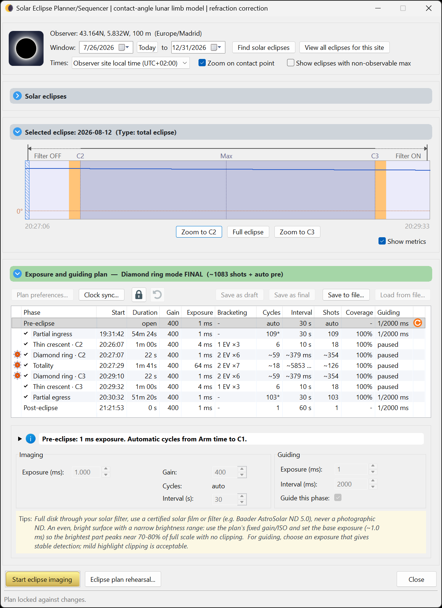

HelioMaker Solar Eclipse Imaging Guide
Planning, rehearsing and running an automated capture of a total solar eclipse.
A companion to HelioMaker's integrated Windows help.
What's in this guide
- 1Prepare in advance The advance checklist: planning early, daytime polar alignment, solar guiding practice, timing verification and full rehearsal.
- 2Gear & rig requirements What you need, including shared camera guiding and the optional separate guide scope used to guide during totality.
- 3Safety & eclipse modes Solar filter rules, and Diamond ring versus Safe mode.
- 4Planner basics Find an eclipse for your site, read the contact times, build a plan, preview the simulation.
- 5Plan preferences Safe or Diamond ring timing, Still or Live capture, the measured exposure model, guiding, refocus and the system benchmark test.
- 6Capture mode: Still versus Live Why Still mode gives the most accurate HDR, and how to test your camera before trusting it.
- 7Phase editor Recipes for each phase: exposure, gain, HDR brackets, interval, cycles and coverage.
- 8Focusing Preparing SharpCap Focus Assistant, proving a successful solar scan, and optional refocus before totality.
- 9Simulation options Dry run, wet run, the integrated eclipse simulator, and the planned DirectShow simulation path.
- 10Preflight (arm) checklist The go or no go gates: camera, plan version, focus, guiding, time and location, storage and power.
- 11The run console Full and compact instrument views with clocks, telemetry, filter cues, guiding and refocus status, recovery alerts, and protected run controls.
⚠ Read this first: solar safety
Your eyes come first, and that rule never changes. Never look at the Sun with the naked eye, or through any finder, eyepiece or unfiltered optic, without certified eye protection, except during totality itself (the bright disc fully covered). This eye safety rule is the same whichever imaging mode you choose. Unfiltered sunlight through optics causes permanent, instant eye injury.
Your imaging scopes need a suitable solar filter secured over the front of the optics through every partial phase. Unfiltered sunlight can damage the camera sensor. If you use a separate guide scope, filter it too. When the scope's filter comes off is what the eclipse mode sets, and it's about equipment/imaging timing, not your eyes:
- Safe (the default mode): the scope's filter comes off only well inside totality and goes back on early. This provides a more conservative filter timing window.
- Diamond ring (Classical): based on AAS imaging guidance, the scope's filter comes off at the diamond ring near C2 and back on near C3. This window is slightly wider than totality and captures the beads. It requires a clear understanding of the procedure and thorough rehearsal.
Either mode, your eye protection still only comes off during totality. → Safety & eclipse modes
What HelioMaker does
HelioMaker brings the whole solar eclipse imaging workflow into one tool: it finds the eclipse for your exact site, helps you design an exposure plan across every phase, and then runs that plan automatically. It drives the camera through SharpCap, guides on the Sun through the custom PHD2, manages the HDR exposure brackets, and can optionally refocus a few minutes before totality. It provides visual and audio prompts for the planned filter changes, plus optional shutter sounds driven by capture telemetry. Most shutter sounds confirm new capture progress; the long-exposure open/close pair reports camera activity and is not proof that the file was ultimately saved. When audio cues are enabled, a critical alarm may also sound if HM detects an unexpected PHD2 or SharpCap failure requiring attention; HM may attempt to relaunch the affected application, reconnect the planned equipment and resume eclipse imaging. The camera saved in the plan remains authoritative: HelioMaker will not knowingly continue the eclipse sequence through a different SharpCap camera.
Once the plan is set and your mount is ready, including daytime polar alignment (as good as you can achieve in daylight), PHD2 calibration, and passing the preflight checklist, HelioMaker takes over the sequence. You handle safety and the filter swaps at the cued moments; the software does the rest, so you can actually watch the eclipse.
Fast camera readout and frame download are especially important during the brief central phases from C2 to C3. A faster camera can complete more of the planned brackets and capture a greater portion of totality before those unrepeatable moments end. See Gear & rig requirements and test the complete camera configuration with the System benchmark well before eclipse day.
The one message that matters most
Prepare in advance. Rehearse everything, weeks ahead.
A total eclipse gives you one opportunity under strict timing constraints. Totality often lasts only a few minutes, and there is no retry. Everything this guide describes exists so that on eclipse day you are watching the sky, not fighting software.
Well before the eclipse: find the event in the planner and build a starting plan. With the physical rig, determine a well exposed filtered full solar disk exposure and camera gain, and enter them with the correct effective ND rating of the complete solar-filter stack. HelioMaker uses these key inputs with Fred Espenak's eclipse exposure recommendations to derive every phase. Review and tune those phases, run the camera benchmark, then approve and rehearse the completed plan until the sequence, filter cues and refocus feel like muscle memory. Exposure and gain cannot be changed after automated imaging starts. Practise daytime polar alignment and solar guiding on ordinary sunny days. Never debug guiding for the first time on eclipse day.
→ Start here: Prepare in advance
